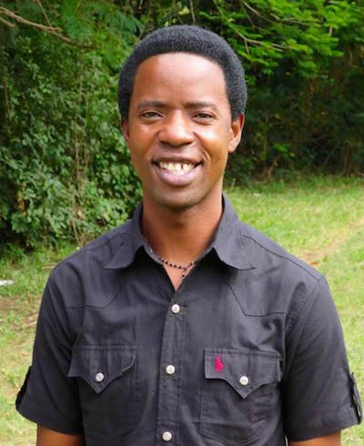
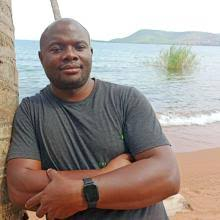

Meet Our Team
The Marine Spatial Planning Initiative brings together a diverse team of researchers, scientists, and practitioners committed to evidence-based coastal management in Tanzania.
Core Project Leadership

Siajali Pamba, PhD
Role: Project Lead & Biodiversity Assessment Coordinator
Affiliation: School of Aquatic Sciences and Fisheries Technology (SOAF)
Spatial ecologist with 15+ years of experience in coastal ecosystem assessment and geospatial analysis for marine conservation planning.
Dr. Pamba leads the Marine Spatial Planning Initiative as institutional lead at SOAF. She specializes in spatial pattern analysis and biodiversity assessment, developing and applying advanced geospatial methods to characterize marine ecosystem diversity and conservation priorities. Her research contributes to evidence-based marine governance in the Indian Ocean region.
Key Focus Areas:
- Spatial pattern analysis and ecosystem motifs
- Landscape metrics and ecosystem signatures
- Biodiversity assessment and conservation prioritization
- Remote sensing and raster analysis
- R programming for spatial data science
- Marine spatial planning frameworks
Links:
- Google Scholar
- ORCID
- SOAF Profile
- Email: siajali.pamba@udsm.ac.tz

Masumbuko Semba, PhD
Role: Data Analyst, Graphics & Web Application Design Lead
Affiliation: Nelson Mandela African Institution of Science and Technology (NM-AIST)
Data scientist specializing in spatial and statistical analysis, interactive data visualization, and web application developement for complex spatial and ecological datasets.
Dr. Semba leads data analysis, statistical modeling, and interactive graphics development for the Marine Spatial Planning Initiative. His expertise spans spatial and statistical analysis, automation of analytical workflows, and full-stack development of interactive visualization platforms using modern programming frameworks.
Key Focus Areas:
- Data analysis and statistical modeling
- Spatial analysis and geostatistics
- Interactive graphics and data visualization
- Web application design and development
- Algorithm development and optimization
- Workflow automation and report generation
- Raster and vector spatial data analysis
- Decision support system architecture
Links:
- Google Scholar
- ORCID
- GitHub
- NM-AIST Profile
- Email: masumbuko.semba@nm-aist.ac.tz

Julius Francis, PhD
Role: Policy Specialist & Ecosystem Services Coordinator
Affiliation: School of Aquatic Sciences and Fisheries Technology (SOAF)
Policy specialist bridging ecosystem science and governance, focused on translating spatial analysis into evidence-based coastal management policies.
Dr. Julius develops policy recommendations and governance frameworks for sustainable marine resource management. He coordinates ecosystem services assessment and ensures that spatial planning outputs inform evidence-based coastal policy development at district and national levels. His work strengthens the link between scientific research and policy implementation.
Key Focus Areas:
- Marine policy development and governance frameworks
- Ecosystem services assessment and economic valuation
- Fisheries policy and regulatory development
- Social-ecological systems analysis
- Livelihood impact assessment and community engagement
- Policy translation and stakeholder communication
Links:
- Google Scholar
- ORCID
- SOAF Profile
- Email: julius.francis@udsm.ac.tz

Emmanuel Mpina, MSc
Role: Bio-Economic Analysis & Visualization Lead
Affiliation: The Nature Conservancy, Tanzania
Digital innovation specialist and conservation economist creating interactive tools that transform complex spatial and economic data into actionable insights for decision-makers.
Emmanuel develops the digital visualization platform and conducts bio-economic cost-benefit analysis. He bridges technical analysis with stakeholder communication through interactive mapping tools and decision support systems. His expertise in data visualization enables diverse stakeholders to understand and act on complex marine spatial planning outcomes.
Key Focus Areas:
- Bio-economic modeling and cost-benefit analysis
- Interactive mapping and web-based visualization
- Coastal community engagement and participatory planning
- GIS and spatial data management
Links:
- The Nature Conservancy - Tanzania
- ORCID
- Email: empina@tnc.org

Samson Job, MSc
Role: Field Operations & Logistics Coordinator
Affiliation: School of Aquatic Sciences and Fisheries Technology (SOAF)
Field operations specialist with expertise in survey coordination, equipment management, and community-based data collection for coastal research projects.
Mr. Samson coordinates all field activities and logistics for the Marine Spatial Planning Initiative. He manages survey equipment, organizes fieldwork schedules, coordinates with local communities and fishing associations, and ensures smooth implementation of data collection protocols. His experience in coastal fieldwork and community engagement is essential for successful ground-truthing of satellite data and stakeholder involvement.
Key Focus Areas:
- Field survey coordination and management
- Community engagement and liaison
- Equipment and logistics management
- Data collection protocol implementation
- Coastal fieldwork and site access coordination
- Stakeholder communication and feedback collection
Links:
- SOAF Profile
- ORCID
- Email: samson.job@udsm.ac.tz
Gervas Maro, BSc
Role: Socio-Economic Analysis & Livelihood Coordinator
Affiliation: School of Aquatic Sciences and Fisheries Technology (SOAF)
Socio-economic specialist focused on understanding fishing livelihoods, community needs, and social dimensions of marine spatial planning in coastal Tanzania.
Mr. Gervas conducts socio-economic assessments and livelihood analysis for the communities in Mkoani and Mkuranga districts. He documents fishing practices, income sources, and community priorities, ensuring that marine spatial planning outcomes address local livelihood needs and support sustainable resource management. His work bridges ecological science and human wellbeing, making spatial plans locally relevant and socially acceptable.
Key Focus Areas:
- Socio-economic assessment and livelihood analysis
- Fishing community engagement and needs assessment
- Livelihood impact assessment
- Community priorities and resource use documentation
- Social dimension integration in marine spatial planning
- Participatory planning and community feedback
Links:
- SOAF Profile
- ORCID
- Email: gervas.maro@udsm.ac.tz
How to Reach the Team
For general inquiries, project coordination, or collaboration opportunities:
Project Email: siajali.pamba@udsm.ac.tz
WhatsApp/Phone: +255 000 000 000
Mailing Address:
Marine Spatial Planning University of Dar es Salaam, School of Aquatic Sciences and Fisheries Technology (SOAF), P.O. Box 60091, Dar es Salaam, Tanzania
Opportunities to Engage
We welcome:
- Technical collaborators and researchers
- Community members and local stakeholders
- Fishing associations and livelihood groups
- Government partners at district and national levels
- Conservation organizations and NGOs
If you’re interested in collaborating or learning more about the initiative, please reach out to our core team through the contacts above.
Last updated: December 28, 2025